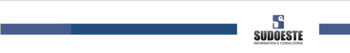

Prezados Senhores,
A Sudoeste Informática e Consultoria, responsável técnica do sistema Viabiliza da Secretaria Municipal de Desenvolvimento Urbano — SEDUR, solicita o registro das URLs abaixo como endereço da instituição para recebimento dos processos de viabilidade locacional enviados pelo REGIN.
O contrato desta comunicação é a versão 2.0.0 da API de recebimento. O REGIN chama a URL da Prefeitura. Não há token nem header JWT nesta chamada. O JWT permanece apenas nas chamadas que o Viabiliza faz à API da JUCEB.
O teste de conectividade é um GET na URL de recebimento. A resposta é texto puro 3. O POST do processo usa a mesma URL e responde também em texto puro:
| Código | Significado | HTTP |
|---|---|---|
3 | Protocolo gravado agora. | 200 |
5 | O mesmo protocolo já havia sido recebido. Não abre segunda via. | 200 |
0 | Protocolo ausente ou vazio. Nada é gravado. | 400 |
A duplicidade é pelo número do protocolo, não pelo CNPJ. O CNPJ da Prefeitura Municipal de Salvador é 13.927.801/0001-49.
O POST recebe um único JSON, a declaração ProcessoDeclaracao, versão 2.0.0. Campos, tipos e exemplos estão na especificação anexa e na página de documentação de cada ambiente.
O processo é criado quando, além do protocolo, vêm razão social, CNAE principal, área utilizada maior que zero, logradouro, bairro e CEP. Sem algum desses, a resposta continua 3 e o processo não é criado.
| Ambiente | Recebimento | Documentação (Swagger, v2.0.0) |
|---|---|---|
| Homologação | https://viabiliza-hml.salvador.ba.gov.br/api_integracao/recebe |
https://viabiliza-hml.salvador.ba.gov.br/api_integracao/docs |
| Produção | https://viabiliza.salvador.ba.gov.br/api_integracao/recebe |
https://viabiliza.salvador.ba.gov.br/api_integracao/docs |
A homologação do REGIN deve apontar somente para a URL de homologação, e a produção do REGIN somente para a URL de produção. Este endereço substitui o informado no ofício de 19 de agosto de 2026. O sistema é o Viabiliza, e não viabilidade.
Certos da atenção, colocamo-nos à disposição para o teste de envio assim que as URLs estiverem registradas.
Atenciosamente,
Filipe Falcão
Líder técnico
Sudoeste Informática e Consultoria
Viabiliza — SEDUR